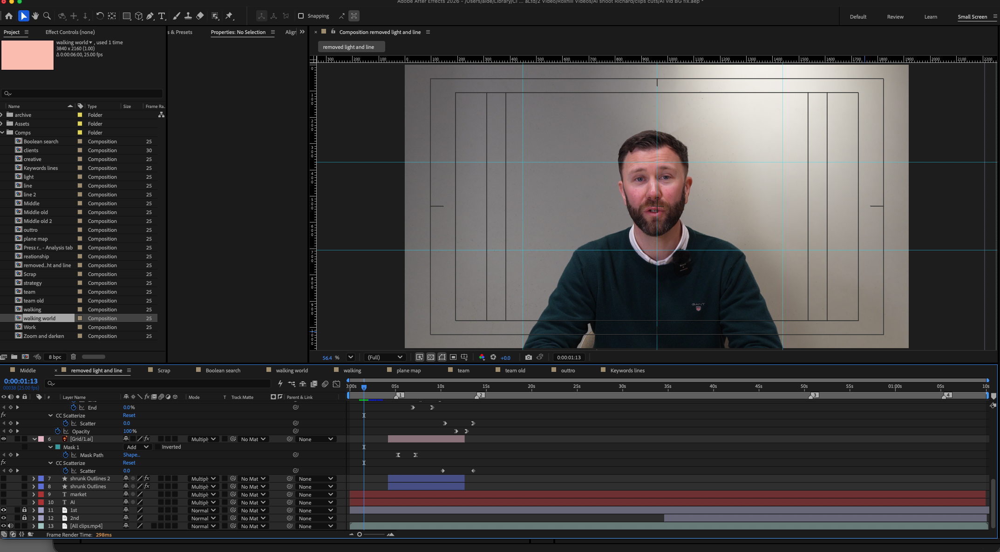

AI video
Promotional video:
This video is to highlight Roxhill's usage of AI. It's supposed to emphasize that AI is used as a gimmick by many companies, but not with Roxhill. We use AI to help your PR work flow.
Creation
Filmed on a Fujifilm blogging camera with a simple front light. Since I couldn't hide the light while filming, I had to remove it in post.

End Result:
The video's culmination is a captivating and educational piece that achieves its purpose while leaving a lasting impression. It embodies the fusion of simplicity, style, creativity, and brand coherence